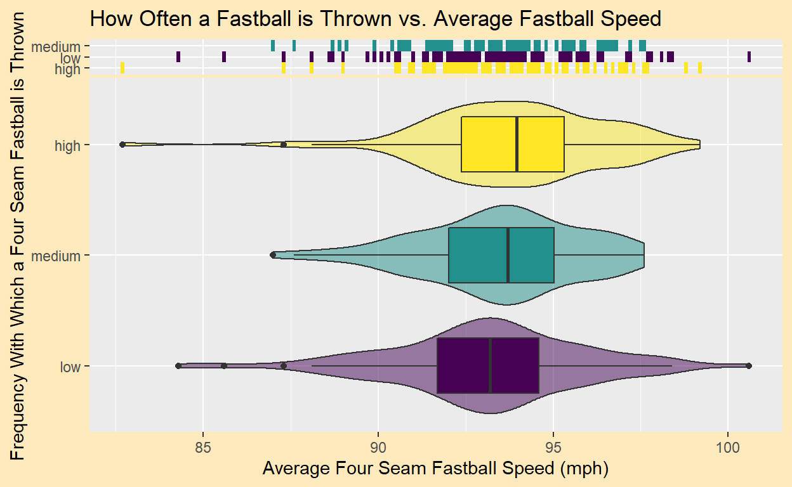
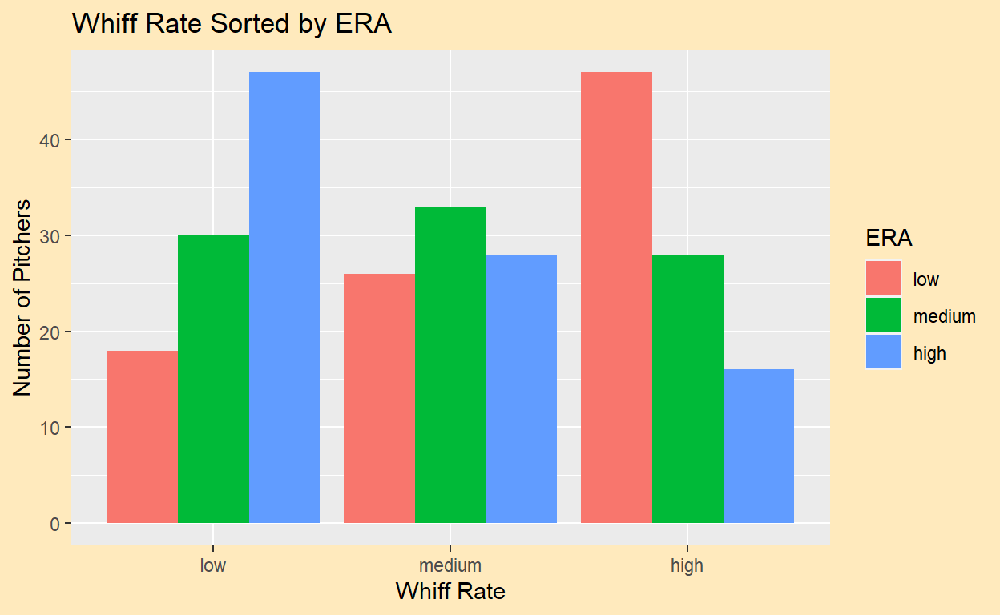
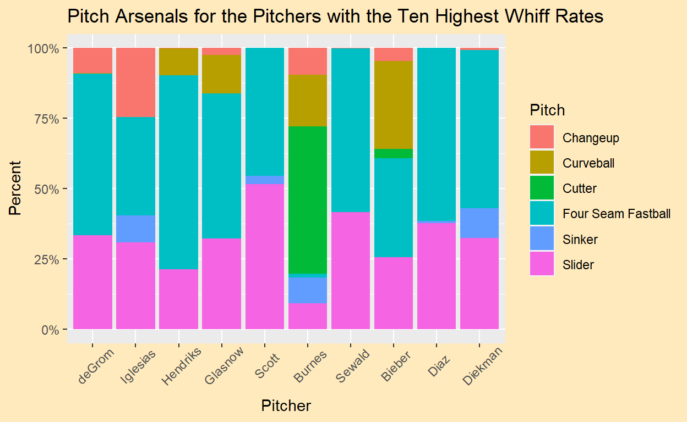
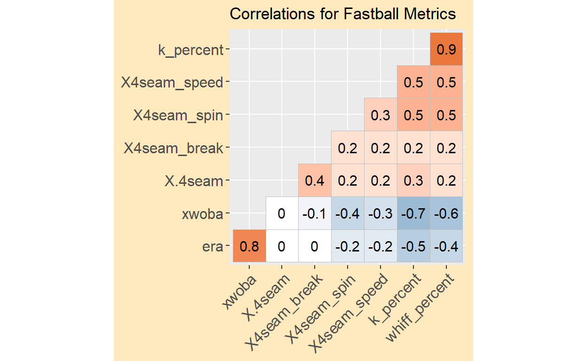

The purpose of these visualizations is to, through quantitative measurements, judge the pitching arsenal and overall performance of pitchers in the 2021 Major League Baseball season. Using data gathered from https://atmlb.com/3y4wYXS, the graphs below seek to examine the relationships between certain types of statistics such as ERA, pitch spin rate, and strikeout percentage. After looking at these visualizations, we want to be able to discover which variables lead to success on the mound.
First, let’s examine the relationship between strikeout (K) rate and earned run average (ERA). Does a high K% lead to a low ERA? Does striking batters out equal overall success? One would guess that the more batters a pitcher strikes out, the more effective he will be.
The correlation coefficient between strikeout rate and ERA is -0.521, meaning that there is a moderate negative linear correlation between the two variables. In other words, there is some truth to the statement that pitchers who strike out more batters are more likely to have lower ERAs, and thus experience more success. However, there are some pitchers who thrive despite having low strikeout rates, such as Jose Alvarez, Tyler Rogers and Adam Cimber.
This next graph aims to see if pitchers with faster fastballs throw them more often. Generally, one would think that if a pitcher throws a faster 4-seamer, he would be inclined to throw it more. The violin boxplot below examines that relationship. The pitchers that throw fastballs have been split up by percentile into three categories: low fastball frequency, medium frequency, and high frequency. Take a look at the graph below and examine the relationship between the two variables.

Somewhat surprisingly, the graph shows little to no relationship between the two variables. While the medians do slightly trend upwards as frequency is increased, all three violin plots are very similar. A closer look at some of the outliers reveals some important things to notice.
First, Cleveland hurler Emmanuel Clase is the only pitcher with an average fastball velocity of over 100 mph. However, he only threw his fastball .9% of the time. Why would someone with such a powerful fastball use it so sparingly? A look at the data set shows that Clase relied heavily on his cutter, a pitch that also topped 100 mph. He threw the cutter 69.4% of the time. Because Clase’s cutter was so good, he had no reason to throw the fastball. Thus, he became an outlier in the data set.
Another interesting outlier is San Francisco Giants reliever Tyler Rogers. Rogers has the slowest fastball velocity in the data set, yet he threw the pitch with a high frequency. Confusing, right? But Rogers is a submarine pitcher, one who’s arm nearly scrapes the ground as he delivers his pitch. Rogers’ unorthodox pitching motion allows him to fool hitters and thrive with a very below-average fastball velocity.
The following plot will look to track pitchers’ sliders. Typically, an effective slider is based on two things: speed and movement. A high-velocity slider and one with a lot of movement will be the toughest to hit. In the hexbin plot below, pitchers’ sliders are measured by these two variables.
As we can see, most pitchers have very similar sliders. The average pitcher throws his slider at about 85-86 mph with around 5-7 inches of break (movement). There seems to be some correlation between speed and break. That is, pitchers with a faster slider tend to have less movement on it. However, we cannot assume that one causes the other.
Two specific bins that stand out are the ones in the top left corner. These bins are so far removed from the rest of the data, and it’s fair to wonder what’s going on with those pitchers. The bin farthest away contains the metrics for 41 year-old lefthander Rich Hill. As he’s gotten older, Hill has lost velocity in general, so he’s been forced to rely on movement to keep his career alive. Hill has the only slider clocking in at under 70 mph, but the 22.7 inches of movement he gets on it outdoes the next closest pitcher by over 3 inches. The next closest pitcher, you ask? None other than everyone’s favorite outlier, Tyler Rogers.
Rogers’ data is encompassed by that second bin from the left, and it’s not surprising to see him there. We already know that he doesn’t throw hard, and, like Hill, needs to rely on movement to get hitters out.
So what’s the point of this hexbin plot? Well, from an offensive perspective, hitters can see what an average slider looks like. During practice, they can focus on hitting sliders with the average speed and movement. Conversely, pitchers should focus on moving away from the average, ideally adding speed or movement to their sliders.
Next, let’s examine the relationship between strikeout percentage and expected weighted on-base average (xwOBA). According to MLB, “xwOBA is formulated using exit velocity, launch angle and, on certain types of batted balls, Sprint Speed.” (https://www.mlb.com/glossary/statcast/expected-woba for more info.) Essentially, it measures how a hitter is expected to be performing strictly based upon factors he can control in order to get the most accurate representation of a hitter’s success. The best pitchers will yield low xwOBAs. In the scatterplot below, each pitcher’s point is colored based upon whether his ERA falls into the lower third of the data, the middle third, or the higher third.
The correlation constant between K% and xwOBA is -0.716, meaning that there is a moderately strong negative linear correlation between the two variables. Pitchers with higher strikeout rates tend to yield lower xwOBAs. Because the correlation coefficient is more negative than it was in the first scatterplot, one can conclude that K% affected xwOBA more than ERA in 2021.
The colors of the data points represent ERA, and because of this, it is easy to see how ERA relates to xwOBA. Generally, pitchers with a low xwOBA have a low ERA. Most of the red points lie at the bottom of the plot, and most of the blue points lie at the top. But what about pitchers like Wily Peralta and Jack Flaherty, who found themselves in the lowest third of ERAs but had higher xwOBAs than some of the “high ERA” players? The thing about xwOBA is that it is an expected value. Based on the contact they allow hitters to make, Peralta and Flaherty should have allowed high wOBAs, and in turn, likely high ERAs. But since their ERAs were so low, we see that Peralta and Flaherty got lucky in 2021. For whatever reason, these pitchers’ ERAs were better than they should have been. Maybe the hitters were unlucky and hit baseballs right at the fielders. Maybe the defense behind Peralta and Flaherty was exceptional. Likely, Peralta and Flaherty’s luck was a combination of many things. But expected values like xwOBA goes to show that ERA doesn’t tell the whole story of a pitcher’s performance.
(Side note: Jack Flaherty’s luck was likely because of his defense. His St. Louis Cardinals set a record in 2021 when five different Cardinals won Gold Gloves. A Gold Glove is an award given to the best fielder at each position. There is a winner in both the National and American leagues.)
Below, this side by side barchart below challenges the relationship between whiff rate, the percentage of pitches for which a pitcher generates a swing and miss, and ERA. Here, whiff rate and ERA are split up by quantiles into three categories, labeled low, medium, and high.

The barchart shows an unsurprising relationship: the more swings and misses a pitcher generates, the lower his ERA will be. This isn’t true in all cases, as there are evidently some pitchers who have both a low whiff rate and ERA, and some who have a high whiff rate and ERA. So clearly, whiff rate isn’t everything, but it’s a decent indicator of success for a pitcher.
Since our goal through these visualizations is to see what qualities make a good pitcher, we would be missing an important factor if the types of pitches a pitcher throws were not considered. Below, we will look at a stacked barchart that examines the pitching arsenals of the ten pitchers with the highest whiff rates. The barchart shows not only what pitches each pitcher threw, but also how frequently he threw them.
Note: the x-axis decreases by whiff rate (i.e., Jacob deGrom has the highest whiff rate of the ten, Edwin Diaz and Jake Diekman are tied for the lowest of the ten).

The barchart shows some fascinating results. Some pitchers threw five or more pitches, while others were able to get by with essentially two. Every pitcher threw a four-seam fastball over 25% of the time except for Corbin Burnes, who is perhaps the most interesting one here. Instead of relying on a fastball like everyone else, Burnes threw a cutter, thrown only by him and Shane Bieber, nearly 50% of the time. Burnes only threw a fastball a miniscule 1.5% of the time, yet he still had the sixth highest whiff rate in baseball. Burnes uses six different pitches, while Diaz and Paul Sewald really only throw two. (They throw tertiary pitches less than 1% of the time.) The fact that Diaz and Sewald can thrive while relying only on a fastball and a slider says a lot about the quality of those pitches. It seems like Burnes likes to keep his hitters guessing, while Diaz and Sewald are confident that the batter can’t hit their pitch, even if they know what’s coming. The takeaway from this chart is pretty clear. It’s important for a pitcher to have two high-caliber pitches to rely on, and typically those are the fastball and the slider. However, we have seen from Burnes that one can succeed without heavy use of these weapons.
To wrap up our analysis of pitchers’ arsenals and statistics, we turn to this correlation plot that shows the linear correlation coefficients for relationships between given stats. Here, we look at ERA, xwOBA, 4-seam fastball frequency, break, spin rate, and velocity, strikeout percent and whiff rate. On the plot, a dark red box signifies a strong positive linear correlation, while a dark blue box signifies a strong negative linear correlation. The lighter the color, the weaker the correlation is.

The correlation plot reinforces some things we already knew. For instance, we saw that from the “xwOBA vs. Strikeout Rate” scatterplot that those two variables had a moderately strong negative correlation. That can be seen here as well. But a new fact that we can learn from this plot is that, of the variables measured, xwOBA and K rate have the strongest negative linear correlation. The plot also shows that ERA and xwOBA have a strong positive linear correlation, as do K rate and whiff rate. Both of these are logical. Remember, xwOBA is an expected value, so as it decreases, we would expect stats like on-base average, slugging percentage, and ERA to decrease as well. Whiffs lead to strikeouts, so naturally, the more whiffs a pitcher gets, the more strikeouts he will accrue.
It is also interesting how all the correlations measuring fastball stats against other stats are all very weak. From this, we gather that while a high spin rate, velocity, break, or usgae rate might help a pitcher on the mound, these stats are far from the only ones that impact pitcher performance.
To Summarize:
The goal through these visualizations was to determine what characteristic make an effective pitcher. We have seen that there are some common threads between the best of the best. They are able to generate whiffs and get strikeouts, and maybe they are able to throw a little harder than the rest. Most rely on a powerful fastball and another strong secondary pitch. However, a more important takeaway is that effective pitchers come in all shapes and sizes, so to speak. There might be correlations between success and a certain variable, but it is proven that pitchers can stray from what’s normal and still do well.
We looked at Tyler Rogers, a soft-throwing submarine pitcher who, despite his velocity, had the 13th lowest ERA in baseball. We saw Milwaukee ace Corbin Burnes’s pitching arsenal differ wildly from other pitchers of his caliber. Guess what? Burnes won the 2021 NL Cy Young award, given to the best pitcher in the National League. Clearly, there’s no right or wrong way to pitch, and even the most unlikely of players can find success.